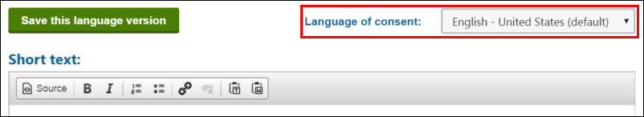
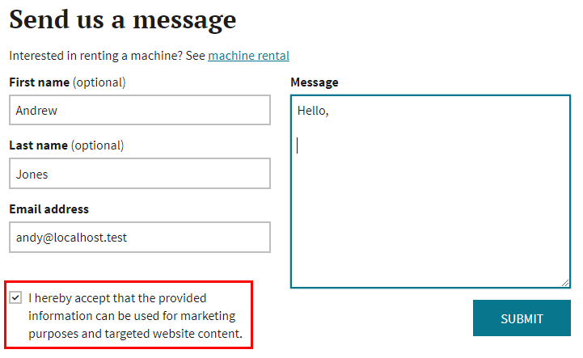

Working with consents
In Kentico, consents are records used to inform website visitors about the means of collecting and manipulating their personal data by the system, site administrators, marketers and anyone else who has access to said data, including third-parties to whom this data is forwarded.
You can use consents to comply with the requirements of the GDPR and other personal data regulations.
Whenever any personal data of a visitor is obtained, it is necessary to have a consent agreement from the visitor to legally process this data. This includes tracking of contacts and their activities on the live site. Every consent agreement of a visitor is directly connected to a corresponding contact. Deleting contacts from the system therefore also causes deletion of the contact's consent agreements.
Definition of consent
"'Consent' of the data subject means any freely given, specific, informed and unambiguous indication of the data subject's wishes by which he or she, by a statement or by a clear affirmative action, signifies agreement to the processing of personal data relating to him or her."
(Source: GDPR Article 4, Paragraph 11)
This page describes how to define consents, and give visitors options to give various types of consent agreements.
Tip: To learn which types of GDPR compliance scenarios you can resolve using consents, see the following blog post: GDPR – Building Consents and Privacy Notices. The post also provides tips on writing consent texts and real-world examples.
Creating consents
Open the Data protection application and switch to the Consents tab.
Click New consent.
Type a Display name and click Save.
On the Consent text tab, use the provided text areas to compose the content of the consent:
Short text – a brief explanation of the consent's content for public users. The short text is shown to visitors when presenting an option to give consent agreements.
Full text – contains the full content of the consent. The full text content can be made available to everyone upon request, preferably through a dedicated privacy policy page.
When you are finished with the work, click Save (or Save this language version if multiple cultures are assigned to the current site).
(If multiple website cultures are present) Switch between cultures using the Language of consent selector and write the consent texts in the given languages. The selector lists all cultures available for the current site.
Handling of untranslated consents
If a consent is not available for the culture selected by a visitor, the website's default culture is used instead.
Kentico EMS required
Features described on this page require the Kentico EMS license.
Setting up tracking consent
When creating a consent for the tracking of contacts and activities, you also need to provide a way for visitors to adjust their allowed cookie level. The system only performs the tracking for visitors whose cookie level is Visitor or higher (i.e. All cookies in the configuration of cookie law web parts).
Prerequisites
On-line marketing must be enabled to allow contact creation:
Open the Settings application.
Navigate to the On-line marketing category in the settings tree.
Select the Enable on-line marketing check box.
Click Save.
To ensure that visitors are not tracked until they give the tracking consent, you need to set the default cookie level for your website:
Open the Settings application.
Navigate to the System category in the settings tree.
Set the value of the Default cookie level setting to System or Essential.
With the System cookie level, basic functionality such as authentication and language selection will not work for visitors by default.
If possible, we recommend setting the level to Essential (or higher if you are not legally required to obtain tracking consent). However, you may need to verify that the Essential cookies are compliant with any applicable legal requirements and regulations.
Click Save.
To allow visitors to give or revoke agreements with the tracking consent:
Open the Pages application.
Add the Cookie law and tracking consent web part to a suitable location on your website (we recommend the main master page that defines the shared content of all pages).
Select an appropriate consent via the web part's Tracking consent property (in the On-line marketing category).
Configure the web part in a way that allows visitors to enable All cookies.
Click Save & Close.
Now when a visitor arrives on your website, the system does not track them as a contact until they give their consent via the Cookie law and tracking consent web part. For visitors whose cookie level is lower than Visitor (i.e. No cookies or Only essential cookies in the web part configuration), the web part additionally displays the Short text of the selected tracking consent.
When a visitor changes their allowed cookie level, the web part automatically manages agreements for the assigned tracking consent:
When a visitor raises their cookie level to All cookies, a consent agreement is created for the new contact.
If a visitor lowers their cookie level, the corresponding tracking consent agreement is revoked.
The following is a sample configuration of the Cookie law and tracking consent web part. You can modify the properties and use this as a basis for your own setup.
Levels category:
Compare current cookie level to: All cookies
Below level behavior category:
If level is below, display: Enabled
Text: Only system cookies are currently stored. Tracking of activities and analytics features are disabled.
Show deny button: Disabled
Show allow specific button: Disabled
Show allow all button: Enabled
Exact level behavior category:
If level matches, display: Enabled
Text: The website now stores cookies on your computer, tracks activity, creates personalized content and processes analytics. You can find more information on our privacy page.
Show deny button: Disabled
Show allow specific button: Disabled
Show allow all button: Disabled
Above level behavior category:
If level is above, display: Disabled
Consent buttons category:
Allow all button text: I agree
On-line marketing category:
Tracking consent: Select the consent to which you want visitors to give consent
Consent reference markup: Add any HTML content that you wish to render after the short text of the selected consent. For example, can be used to display a pop-up window or a link to a page with the full text version of the consent.
Message visibility for administrators
All users who access the Kentico administration interface automatically have all cookies enabled and stored in their browser. As a result, you might not see the Cookie law and tracking consent message if you view the live site after adding the web part.
To check whether your configuration of the cookie web part is correct, open the website in a different browser or computer, or use a separate anonymous/private/incognito window of your current browser.
Adding consents to on-line forms
To collect consent agreements regarding the processing of personal data submitted by visitors through on-line forms, utilize the Consent agreement form control.
Open the Forms application and edit (
 ) the form to which you want to add the option to give consent.
) the form to which you want to add the option to give consent.Switch to the Fields tab.
Click New field and set the following properties:
Field name: Consent
Data type: Unique identifier (GUID)
Form control: Consent agreement
Editing control settings -> Consent: Select the desired consent
Click Save.
Move the consent field to the appropriate location within the form.
If you use a custom form layout, switch to the Layout tab and edit the form layout to display the consent field.
The consent field in the resulting form displays a check box, followed by the Short text of the given consent. When a visitor selects the consent checkbox and submits the form, the system automatically creates a corresponding consent agreement for the given contact.

Consent agreement field displayed in a form
Note: The system does not support consent fields that are required. If you enable the Required property for consent fields, the validation will always fail (the system sets the field's value only after the form is submitted).
Adding consents to newsletter subscriptions
To collect consent agreements from visitors who subscribe to newsletters, utilize the Custom subscription form web part and an alternative form with a field using the Consent agreement form control.
To ensure that the consent agreements are recorded correctly for each subscriber, make sure that Newsletter - Subscriber class is configured to map the subscription form's Email address field to the email address contact attribute.
Open the Modules application.
Edit (
) the Email marketing module.Select the Classes tab and edit the Newsletter - Subscriber (newsletter.subscriber) class.
Open the Alternative forms tab.
Edit the alternative form that you use for subscriptions on your website.
Switch to the Fields tab.
Add a New field using the Consent agreement form control. See Adding consents to on-line forms for details.
Click Save.
If you use a custom form layout, switch to the Layout tab and edit the form layout to display the consent field.
Make sure that pages containing your newsletter subscription form use the Custom subscription form web part with the correct alternative form.
Open the Pages application and select the appropriate page.
Switch to the Design tab and place the Custom subscription form web part.
Select the correct Alternative form.
To allow signed in users to give consent agreements, you need to disable the One-click subscription for signed in users property of the Custom subscription form web part.
Click Save & Close.
The consent field in the resulting form displays a check box, followed by the Short text of the given consent. When a visitor selects the consent checkbox and submits the subscription form, the system automatically creates a corresponding consent agreement for the given contact.
Adding consents to user registration
To collect consent agreements from visitors who register as new users, utilize the Custom registration form web part and an alternative form with a field using the Consent agreement form control.
To ensure that the consent agreements are recorded correctly for each visitor, make sure that:
Your registration form contains an Email address field
The User class is configured to map the given email address field to the email address contact attribute
Open the Modules application.
Edit (
) the Membership module.Select the Classes tab and edit the User (cms.user) class.
Open the Alternative forms tab.
Edit the alternative form that you use for registration on your website.
Switch to the Fields tab.
Add a New field using the Consent agreement form control. See Adding consents to on-line forms for details.
Click Save.
If you use a custom form layout, switch to the Layout tab and edit the form layout to display the consent field.
Make sure that your site's registration page contains the Custom registration form web part with the correct alternative form. For more information about custom registration forms in general, see Using the Custom registration form web part.
Open the Pages application and select your registration page.
Switch to the Design tab and place the Custom registration form web part.
Select the correct Alternative form.
Click Save & Close.
The consent field in the resulting form displays a check box, followed by the Short text of the given consent. When a visitor fills in the registration form and selects the consent checkbox, the system automatically creates a corresponding consent agreement for the given contact.
Displaying consents on the live site
To display the short and full text of consents on the live site, for example on your website's privacy policy page, first get the consent object using the GlobalObjects.Consents.<ConsentCodeName> macro (use the indexer macro format GlobalObjects.Consents["<ConsentCodeName>"] if the code name contains any special characters, like a hyphen). Then call the consent object's GetConsentText() macro method, which returns a ConsentText object providing consent text values in its ShortText and FullText properties.
By default, the GetConsentText() macro method returns consent texts in the culture selected by the current visitor. To get a specific culture version of the consent text, add the cultureCode parameter: GetConsentText(string cultureCode)
Open the Pages application.
Navigate to a page where you want to add the consent text.
Add a Static text web part to the page.
In the web part's configuration, enter HTML content with the required macros into the Text property (under the Content category).
Example<h3>{% GlobalObjects.Consents["DancingGoatMachineRentalForm"].ConsentDisplayName %}</h3><p>{% GlobalObjects.Consents["DancingGoatMachineRentalForm"].GetConsentText().ShortText %}</p><p>{% GlobalObjects.Consents["DancingGoatMachineRentalForm"].GetConsentText().FullText %}</p>Click Save & Close.
Allowing visitors to revoke consent agreements
Kentico does not provide any ready-to-use components for revoking consent agreements. Each website has its own personal data processing requirements and its own unique set of consents, so your developers need to create custom components for this purpose.
See Revoking consent agreements for details.
Viewing archived consents
When a visitor gives a consent agreement, it is based on the exact text of the consent at the given time. However, consent texts may change at a later time.
To keep track of the exact consent versions for which visitors have given agreements, the system performs automatic consent archiving. When a consent with at least one agreement is modified and saved, an archived version of the original consent text is created. Every archived consent is represented by a unique hash string, and consists of all language versions created for the given consent.
Modifying consents
When making major changes to consent texts, the best practice is to create new consents rather than modifying existing consents.
To see the archived versions of a specific consent and all of its language version:
Open the Data protection application.
Switch to the Consents tab.
Edit (
) the given consent.Switch to the Consent archive tab.
The tab displays all archived versions of the selected consent for which at least one visitor has given an agreement. You can view ( ) the short and full text of the consent language versions.
) the short and full text of the consent language versions.
Creating macro conditions based on given consents
You can use the AgreedWithConsent macro method and the Contact has agreed with consent macro rule to check if a contact has given an agreement with a specified consent. You can use them in the following ways:
The AgreedWithConsent macro method resolves to false even if called for a contact object that does not exist. This is important, because if a visitor does not accept the tracking consent, the system does not create a contact associated with this visitor (i.e. OnlineMarketingContext.CurrentContact is null).
On the live site, you can use the macro to build conditional content based on the current contact's consents. For example, to display different text to visitors who have given an agreement with a consent:
Add a Static text web part to a page.
Enter the following code into the Text property under the Content category.
{%if(OnlineMarketingContext.CurrentContact.AgreedWithConsent("ConsentCodeName")) {"Thank you for accepting the consent."}else{"Please accept the consent."} %}
On the live site, you can use the macro to adjust the properties of web parts. For example, to show a web part only to those visitors who have given an agreement with a consent:
Modify an existing web part.
Expand the Visibility category. Click the Edit value icon (
 ) next to the Visible check box to enter a macro condition.
) next to the Visible check box to enter a macro condition.Enter the following code into the editor:
{% OnlineMarketingContext.CurrentContact.AgreedWithConsent("ConsentCodeName") %}
In on-line marketing modules such as personas, contact scoring, marketing automation and contact groups you can use the macro rule to create rules and segment visitors. For example, to create a contact group which contains users who have given an agreement with a consent:
Set up a condition-based contact group.
Click Edit next to the Macro condition field to open the Rule designer interface.
Use the Contact has agreed with consent rule and select the desired consent.